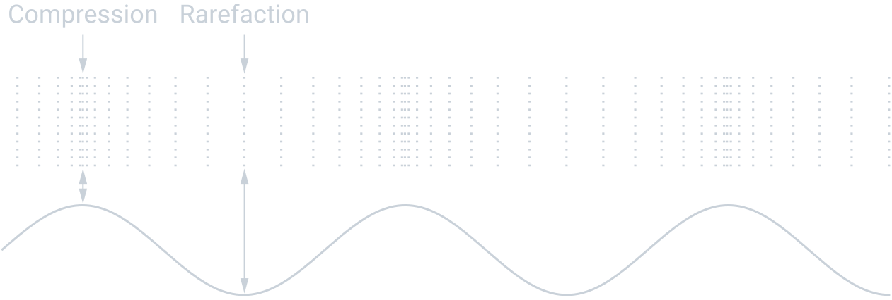
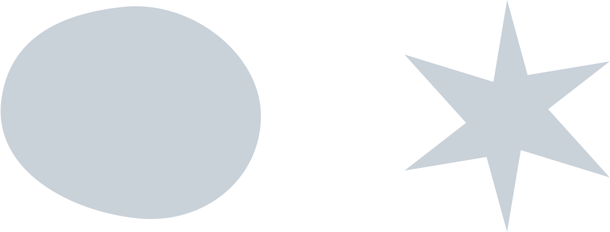
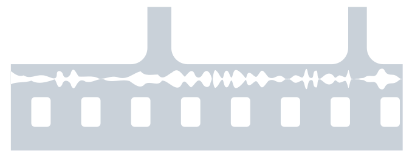

Previous slide Next slide Toggle fullscreen Open presenter view
Beyond music - from noise to art
Sound (Art & Technology)
Lorenz Schwarz
Winter Semester 2023/24Course info
← Overview · Download PDF ↓
Beyond music - from noise to art
Expanding the boundaries of music
Stravinsky's The Rite of Spring provoked outrage at its 1913 Paris premiere:
Radical rhythmic complexity and irregular meters
Dense dissonant harmonies
Ritual-like orchestration
Is this still music?
Sound (Art & Technology) | Lorenz Schwarz | WS 2023/2024
Beyond music - from noise to art
“WHEREAS, IN THE PAST, THE POINT OF DISAGREEMENT
— John Cage, “The Future of Music: Credo” (1937), in Silence: Lectures and Writings, p. 4.
Sound (Art & Technology) | Lorenz Schwarz | WS 2023/2024
Beyond music - from noise to art

Sound (Art & Technology) | Lorenz Schwarz | WS 2023/2024
Beyond music - from noise to art
Vibration and sound
Sound begins as a vibration, a physical disturbance that travels through an elastic medium (e.g., air) as pressure variations.

Sound (Art & Technology) | Lorenz Schwarz | WS 2023/2024
Beyond music - from noise to art
Sound
From Latin sonus :
A distinct auditory impression or tone.
The distinctive timbre of an instrument, ensemble, or style.
Adopted into German as a loanword in the 1950s.
Complex relationship between:
Physical disturbance in a medium and transfer of energy.
Psychophysical perception and sensory experience of the physical stimuli.
Sound (Art & Technology) | Lorenz Schwarz | WS 2023/2024
Beyond music - from noise to art
Shape–sound mapping:

Sound (Art & Technology) | Lorenz Schwarz | WS 2023/2024
Beyond music - from noise to art
Cross-modal perception
Sound and vision influence each other:
Bouba/Kiki effect: sound shapes our perception of form
Audio-visual binding in film (Chion)
Synaesthesia in sound design
Embodied cognition: sound as multisensory experience
→ Sound is never perceived in isolation
Sound (Art & Technology) | Lorenz Schwarz | WS 2023/2024
Beyond music - from noise to art
Example Nr 3 (Audio):
Demonstration of source identification
▶ Play demonstration
Sound (Art & Technology) | Lorenz Schwarz | WS 2023/2024
Beyond music - from noise to art
Sound between natural and cultural sciences
The phenomenon of sound is inherently interdisciplinary, bridging scientific and humanistic approaches.
Natural sciences: physical description of sound
Cultural sciences: relation to human perception and practice
Sound (Art & Technology) | Lorenz Schwarz | WS 2023/2024
Beyond music - from noise to art
Sound as artistic practice
Key developments in 20th century:
Music expands to include noise (Russolo, Cage)
Recording separates sound from source (phonograph, tape)
Listening becomes artistic practice (soundscape, installation)
Space becomes compositional medium (Neuhaus, Zimoun)
→ Sound art emerges as distinct practice
Sound (Art & Technology) | Lorenz Schwarz | WS 2023/2024
Beyond music - from noise to art
Historical precursors
Sound as theatrical and ritual element predates recording technology:
Ceremonial and ritual contexts (ancient practices)
Theatrical sound effects (Japan's Kagura, European theater)
Luigi Russolo's Intonarumori (1913): First theorization of noise as art
→ Russolo's manifesto "The Art of Noises" (1913) proposed noise as legitimate musical material
Sound (Art & Technology) | Lorenz Schwarz | WS 2023/2024
Beyond music - from noise to art
Questions in the study of sound
How can a history of acoustics be written?
What role do technological developments play?
What psychological impact can sound create?
What "meaning" does a sound have (subjective vs. objective)?
How is listening culturally coded?
Sound (Art & Technology) | Lorenz Schwarz | WS 2023/2024
Beyond music - from noise to art
Acoustic Turn
A paradigm shift in how scholars approach sound:
Cultural practice and social phenomenon
Mediated and technologically constructed
Spatial and embodied experience
Historical and political object
Key contributors: Corbin (1998), Sterne (2003), Smith (1999), Pinch & Bijsterveld (2004), Blesser & Salter (2007), Altman (1992), and Chion (1994).
→ Establishing sound as worthy of serious academic inquiry
Sound (Art & Technology) | Lorenz Schwarz | WS 2023/2024
Beyond music - from noise to art
Historical perspectives on sound aesthetics
"Sketch of a New Esthetic of Music" (1907) by Ferruccio Busoni
"The Art of Noises" (1916) by Luigi Russolo
"La Radia" (1933) by Filippo Tommaso Marinetti and Pino Masnata
→ Futurism explored elements of what would later become sound art.
Sound (Art & Technology) | Lorenz Schwarz | WS 2023/2024
Beyond music - from noise to art
Sound, technology, and audio
Sound becomes increasingly produced, synthesized, reproduced, and transmitted through technical media.
→ Sound as a genuinely media-based aesthetic concept
Sound (Art & Technology) | Lorenz Schwarz | WS 2023/2024
Invention of the phonograph (1877)
Beyond music - from noise to art
Symphony of sound
Walter Ruttmann’s audio montage Weekend (1930) is widely regarded as a groundbreaking work in the evolution of sound collages and audio plays:
Sound film without pictures: Pioneering work of musique concrèteDepicting the soundscape of Berlin: urban noise, human voices, and environmental sounds
Sound (Art & Technology) | Lorenz Schwarz | WS 2023/2024
Beyond music - from noise to art
Example Nr 4 (Audio):
Weekend (1930, excerpt) by Walter Ruttmann
▶ Play excerpt
Sound (Art & Technology) | Lorenz Schwarz | WS 2023/2024
Beyond music - from noise to art

Walter Ruttmann's Weekend was recorded using optical sound, where audio is encoded as visual waveform on the film strip.
Sound (Art & Technology) | Lorenz Schwarz | WS 2023/2024
Beyond music - from noise to art
Musique concrète
Sounds are altered using the medium tape, through techniques such as splicing, looping, reversing, pitch shifting, and layering.
Sound (Art & Technology) | Lorenz Schwarz | WS 2023/2024
Beyond music - from noise to art
Example Nr 5 (Audio):
Excerpt from Voile d’Orphée (1953) by Pierre Henry
▶ Play excerpt
Sound (Art & Technology) | Lorenz Schwarz | WS 2023/2024
Beyond music - from noise to art
Studer A80, Photo: JacoTen (CC BY-SA 3.0)
Sound (Art & Technology) | Lorenz Schwarz | WS 2023/2024
Beyond music - from noise to art
Composing with the medium of tape
Working with recorded sound replaced traditional notation and instruments, redefining the relationship between composer, sound, and performance.
Sound (Art & Technology) | Lorenz Schwarz | WS 2023/2024
Beyond music - from noise to art
Example Nr 6 (Audio and Video):
Sound–image–source relations in perception and association
▶ Synchrèse
▶ Rain sounds?
Sound (Art & Technology) | Lorenz Schwarz | WS 2023/2024
Beyond music - from noise to art
Musique concrète and the sound object
Magnetic tape enabled the technical separation of sound and source and introduced new ways of listening and composing.
Sound object (l’objet sonore): sound as an autonomous material, detached from its source
Acousmatic listening: focus on the auditory image rather than visual cause
→ Digital technology (1980s onward) democratized these techniques through sampling, sound design, and DAW-based music production.
Sound (Art & Technology) | Lorenz Schwarz | WS 2023/2024
Marcel Duchamp, Fountain (1917/1964)
Beyond music - from noise to art
Example Nr 7 (Video):
Excerpt from 4′33″ (1952) by John Cage, performed by David Tudor in 1989
Watch: David Tudor performing 4′33″ by John Cage
From the documentary Journeys in Sound by Allan Miller & Paul Smaczny (2012)
Sound (Art & Technology) | Lorenz Schwarz | WS 2023/2024
Beyond music - from noise to art
“There is no such thing as silence.”
— John Cage, “Composition as Process,” Silence: Lectures and Writings.
Sound (Art & Technology) | Lorenz Schwarz | WS 2023/2024
Beyond music - from noise to art
Readymade and non-intentional music
Marcel Duchamp's Fountain (1917):
Everyday object declared "art" by context
Gallery transforms perception
Challenges institutional definitions
John Cage's 4'33" (1952):
Everyday sound declared "music" by framing
Concert hall transforms listening
Challenges compositional definitions
Sound (Art & Technology) | Lorenz Schwarz | WS 2023/2024
Beyond music - from noise to art
Soundscape
Extending Cage's environmental listening, R. Murray Schafer (1933 - 2021) introduced the term soundscape in The Tuning of the World (1977) focusing on the sonic aspects of urban and rural environments.
Etymology: A neologism modeled after the term landscape.
Sound (Art & Technology) | Lorenz Schwarz | WS 2023/2024
From: Schafer, R. Murray. The Tuning of the World. Knopf, 1977.
Beyond music - from noise to art
Acoustic ecology
The study of environmental sound and its interactions with humans, nature, and technology gave rise to a new research discipline at the intersection of science, society, and art.
→ Consciously understanding everyday auditory phenomena
Sound (Art & Technology) | Lorenz Schwarz | WS 2023/2024
Beyond music - from noise to art
…Behold the new orchestra! The sonic universe!
— R. Murray Schafer, “Yes, but Is It Music?” in The New Soundscape: A Handbook for the Modern Music Teacher.
Sound (Art & Technology) | Lorenz Schwarz | WS 2023/2024
Beyond music - from noise to art
Rethinking soundscape
Schafer's concept has been critiqued:
Romanticizes "natural" and rural sounds over urban environments
Treats urban noise as pollution rather than cultural expression
→ Soundscape concept remains influential but requires critical engagement
Sound (Art & Technology) | Lorenz Schwarz | WS 2023/2024
Beyond music - from noise to art
Example Nr 8 (Audio):
Excerpt from Presque rien No. 1 – Le Lever du jour au bord de la mer (1970) by Luc Ferrari
▶ Play excerpt
Sound (Art & Technology) | Lorenz Schwarz | WS 2023/2024
Beyond music - from noise to art
New listening techniques
Exploring ways of perceiving, analyzing, and interpreting sound within its contextual, cultural, and sensory dimensions.
Deep listening and sonic awareness (Pauline Oliveros)
Soundwalk and acoustic ecology (Hildegard Westerkamp)
Detachment from classical concert spaces
Inclusion of sounds from non-musical environments
→ Contributing to the emergence of genres such as ambient, muzak, glitch, and noise
Sound (Art & Technology) | Lorenz Schwarz | WS 2023/2024
Beyond music - from noise to art
Spatial listening
Soundscape involves engagement with spatial aspects:
Scenic listening
Spherical listening
Immersive experience
Binaural listening
Sound (Art & Technology) | Lorenz Schwarz | WS 2023/2024
Beyond music - from noise to art
Music outside of a concert hall
In the mid-to-late 1960s, artist Max Neuhaus (1939-2009) developed listening excursions, involving small groups of participants walking through city environments:
Reframing existing urban noise as a form of artistic expression
Sound (Art & Technology) | Lorenz Schwarz | WS 2023/2024
Times Square
Beyond music - from noise to art
Example Nr 9 (Video):
Times Square (1977-1992) by Max Neuhaus (1939-2009)
Watch on Dia Art Foundation
Video © Dia Art Foundation | Artwork © Max Neuhaus Estate
Sound (Art & Technology) | Lorenz Schwarz | WS 2023/2024
Beyond music - from noise to art
Sound art
Max Neuhaus coined the term sound installation for his unmarked sound pieces installed in stairwells, subway stations, swimming pools, and elevators.
Defining a place through music
Site-specific integration of sound into (architectural) spaces
Sound (Art & Technology) | Lorenz Schwarz | WS 2023/2024
Beyond music - from noise to art
“Traditionally, composers have located the elements of a composition in time. One idea which I am interested in is locating them, instead, in space, and letting the listener place them in his own time.”
— Max Neuhaus, “Program Notes,” in Max Neuhaus: Inscription, Sound Works Volume I (Ostfildern: Cantz, 1994), p. 34.
Sound (Art & Technology) | Lorenz Schwarz | WS 2023/2024
Beyond music - from noise to art
Sound installation
Explores the connection between sound, space, and visual experience, where sound interacts with its environment rather than existing only in time.
Relation between sound and visual aspects
Interaction between listener, object, and environment
Sound unfolds through spatial experience rather than temporal sequence
→ The listener becomes part of the work, defining its time through movement and perception.
Sound (Art & Technology) | Lorenz Schwarz | WS 2023/2024
Beyond music - from noise to art
Sound, space and perception
Sound installations articulate space as an artistic medium, combining architectural, acoustical, and representational dimensions (Sharma, 2023).
Architectural space: physical and social structure shaping sonic experienceAcoustical space: perception of volume, reverberation, and localizationRepresentational space: cultural or conceptual meanings evoked by sound
→ Sound in installation art produces space, rather than merely occupying it.
Sound (Art & Technology) | Lorenz Schwarz | WS 2023/2024
Zimoun, 150 prepared dc-motors, 270kg wood, 210m string wire (2015)
Beyond music - from noise to art
Digital approaches
Ryoji Ikeda (* 1966) , Japanese sound artist and electronic composer
Works with data, mathematics, and digital aesthetics to create immersive audiovisual installations exploring extremes of frequency, rhythm, and scale.
Artist residency at CERN (2014-2015): Developed works based on particle physics and cosmology, including micro | macro (2015) commissioned by ZKM.
→ Sound as digital/mathematical phenomenon
Sound (Art & Technology) | Lorenz Schwarz | WS 2023/2024
Ryoji Ikeda, micro | macro (2015)
Beyond music - from noise to art
micro | macro at ZKM Karlsruhe (2015)Site-specific installation commissioned by ZKM, transforming the former munitions factory's 7,000 m² atriums into an immersive audiovisual datascape.
Visualizes scales from quantum particles (micro ) to observable universe (macro ) through synchronized projections, stroboscopic light, and high-frequency tones—developed during Ikeda's CERN residency.
Watch: ZKM Video Documentation
Sound (Art & Technology) | Lorenz Schwarz | WS 2023/2024
Beyond music - from noise to art
Our understanding of sound transformed across the 20th century:
Recording technology: separated sound from source (phonograph, tape)Cage: reframed listening as compositional act (non-intentional music)Schafer: politicized the acoustic environment (soundscape, ecology)Installation art: sound in architectural space (Neuhaus, Ikeda)Sound sculpture: kinetic objects producing sound (Zimoun, van der Heide, DeMarinis)
Sound (Art & Technology) | Lorenz Schwarz | WS 2023/2024
Literature
Altman, Rick. Sound Theory, Sound Practice . Focal Press, 2003.
Cage, John. Silence: Lectures and Writings. Wesleyan University Press, 1986.
Chion, Michel. Audio-Vision: Sound on Screen . Columbia University Press, 1994.
Corbin, Alain. Village Bells: Sound and Meaning in the 19th Century French Countryside. Papermac, 1999.
Emmerson, Simon. Music, Electronic Media and Culture . Ashgate, 2012.
Flückiger, Barbara. Sound Design: Die Virtuelle Klangwelt des Films . Schüren Verlag GmbH, 2017.
Kiefer, Peter. Klangräume Der Kunst . Kehrer, 2010.
Fuller, Richard Buckminster. The music of the new life. Music Educators Journal, vol. 52, No. 6, Jun. - Jul., 1966, pp. 52-68., https://doi.org/10.2307/3390717
Helmreich, Stefan. Listening against Soundscapes. Anthropology News, vol. 51, no. 9, 2010, pp. 10–10., https://doi.org/10.1111/j.1556-3502.2010.51910.x .
Kelman, Ari Y. Rethinking the Soundscape. The Senses and Society, vol. 5, no. 2, 2010, pp. 212–234., https://doi.org/10.2752/174589210x12668381452845 .
Morat, Daniel, et al. Handbuch Sound: Geschichte, Begriffe, Ansätze . J.B. Metzler Verlag, 2018.
Neuhaus, Max. “Program Notes.” Max Neuhaus: Inscription, Sound Works Volume I, Cantz, 1994.
Pinch, Trevor, and Karin Bijsterveld. “Sound Studies.” Social Studies of Science , vol. 34, no. 5, 2004, pp. 635–648.
Rath, Richard Cullen. How Early America Sounded . Cornell University Press, 2005.
Schaeffer, Pierre, et al. Treatise on Musical Objects: An Essay across Disciplines . University of California Press, 2017.
Schafer, R. Murray. The Tuning of the World. Knopf, 1977.
Schafer, R. Murray. Ear Cleaning: Notes for an Experimental Music Course. Berandol Music Limited, 1969.
Small, Christopher. Musicking: The Meanings of Performing and Listening . University Press of New England, 1998.
Southworth, Michael. The Sonic Environment of Cities. Environment and Behavior, vol. 1, no. 1, 1969, pp. 49–70., https://doi.org/10.1177/001391656900100104 .
Sterne, Jonathan. The Audible Past: Cultural Origins of Sound Reproduction . Duke University Press, 2006.
Weibel, Peter. Sound Art: Sound as a Medium of Art. ZKM/Center for Art and Media ; The MIT Press, 2019.
Wishart, Trevor, and Simon Emmerson. On Sonic Art . Harwood Academic Publishers, 1996.
Copyright and Licensing
Original content: © 2025 Lorenz SchwarzCC BY 4.0 — attribution required for all reuse .
Includes: text, diagrams, illustrations, photos, videos, and audio.
Third-party materials: Copyright respective owners, educational use.
Contact: lschwarz@hfg-karlsruhe.de
E-flat dominant 7 and E major triad chord
Video source: https://www.youtube.com/watch?v=gXOIkT1-QWY
Used for educational purposes
<div class="above-footer">
Compression wave diagram | Created by Lorenz Schwarz, 2025 | CC BY 4.0
</div>
Experiment on 'qualities of impression,' Köhler (1929).
- Cross-modal perception
<div class="above-footer">
Bouba/Kiki effect diagram | Created by Lorenz Schwarz, 2025 | CC BY 4.0
</div>
Image: Intonarumori, 1913
Source: Wikimedia Commons
https://commons.wikimedia.org/wiki/File:Intonarumori,_1913.jpg
Public domain (published before 1930)
Scan from Luigi Russolo's "The Art of Noise"
Invention of the phonograph 1877 by Thomas Edison
Image: Thomas Edison and his early phonograph, circa 1877
Photographer: Levin C. Handy
Source: Brady-Handy Photograph Collection, Library of Congress
https://commons.wikimedia.org/wiki/File:Edison_and_phonograph_edit2.jpg
Public domain (author's life + 70 years)
Audio: Walter Ruttmann, Weekend (1930)
Public domain / Used for educational purposes
pioneered by French composer Pierre Schaeffer.
Image: Studer A80 Master 2-Track Recorder, mastering version
Photographer: JacoTen, August 8, 2012
Source: https://commons.wikimedia.org/wiki/File:studer-a80-master-2-track-recorder,-mastering-version.jpg
License: CC BY-SA 3.0
Attribution required
Video: Die Sendung mit der Maus - Mouse blinking synchronized with castanets
2-second clip demonstrating audio-visual binding (synchresis)
© WDR (Westdeutscher Rundfunk)
Educational fair use: Short excerpt for teaching film sound theory
Video: "Can You Tell the Difference? Bacon vs. Rain"
Demonstrates perceptual ambiguity: frying bacon sounds identical to rain
Source: https://www.youtube.com/watch?v=OAG8IbNrYbo
Storyblocks YouTube channel, 2015
Educational use
Image: Marcel Duchamp, Fountain
Replica at Tate Modern
Photo by Romainbehar, 2019, CC0
https://commons.wikimedia.org/wiki/File:Marcel_Duchamp_-_Fontaine,_exemplaire_2_à_la_Tate_Modern_(2).jpg
Public domain artwork, CC0 photograph
Educational use
<div class="above-footer">
Cycles of the natural soundscape, British Columbia | R. Murray Schafer, The Tuning of the World (1977), p. 229 | © Destiny Books | Educational fair use (17 U.S.C. § 107)
</div>
Image: R. Murray Schafer, The Tuning of the World (1977),
© R. Murray Schafer Estate / Destiny Books
Educational fair use claimed for limited excerpt
Luc Ferrari's Presque rien No. 1 captures the subtle sounds of a seaside morning,
blending field recordings made over the course of a day in a fishing village in former Yugoslavia.
Image: Subway grate in Times Square where Max Neuhaus's "Times Square" sound installation emanates
Photographer: Found5dollar, May 14, 2021
Location: 40° 45′ 31″ N, 73° 59′ 6″ W (Times Square, NYC)
Source: https://commons.wikimedia.org/wiki/File:times-square-by-max-neuhaus-2.jpg
License: CC BY-SA 4.0
Attribution required
Image: Zimoun, "150 prepared dc-motors, 270kg wood, 210m string wire" (2015)
Installation view: Klangraum Krems, Austria, 2017
Source: https://commons.wikimedia.org/wiki/File:zimoun-2015-150-prepared-dc-motors,-270kg-wood,-210m-string-wire.jpg
Photo © Zimoun, licensed under CC BY-SA 3.0
Attribution required
Video: Sound Installations & Sound Sculptures by Zimoun (2008-2025)
© Zimoun
License: CC BY-NC-ND 3.0 (Attribution-NonCommercial-NoDerivatives)
Source: https://vimeo.com/7235817
Educational use allowed with attribution
Image: Ryoji Ikeda, micro | macro (2015)
Source: https://www.ryojiikeda.com/project/micro_macro/
© Ryoji Ikeda
Educational fair use: Non-commercial educational presentation
Academic context: HfG Karlsruhe university course